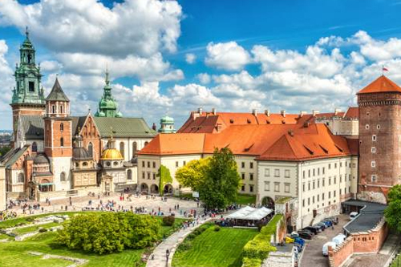
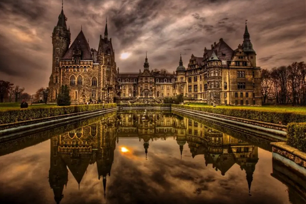
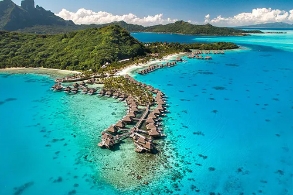
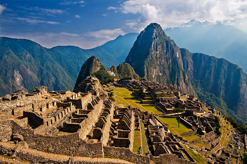
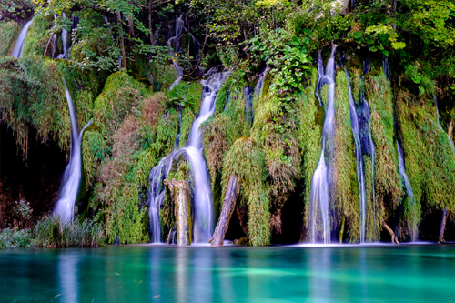
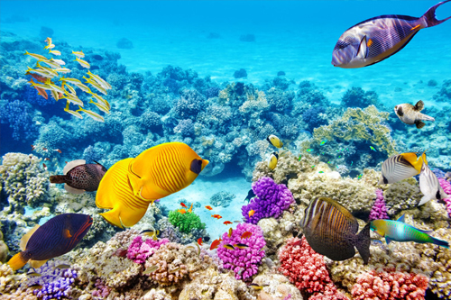

Zamek Królewski na Wawelu

Zamek Królewski na Wawelu, jeden z najważniejszych zabytków Polski, jest położony na malowniczym wzgórzu nad Wisłą w Krakowie. Zbudowany w stylu gotyckim, zamek był rezydencją wielu polskich królów. Obiekt kryje w sobie wiele tajemnic historii Polski, w tym legendę o smoku wawelskim. Wawel jest również domem dla wielu dzieł sztuki i rzadkich artefaktów. Zamek jest otwarty dla turystów i oferuje liczne wystawy oraz możliwość zwiedzania królewskich apartamentów. Jego architektura i zbiory są dowodem na bogatą kulturowo i historycznie przeszłość Polski.
Zamek w Mosznej

Zamek w Mosznej, położony w południowej Polsce, jest wyjątkową atrakcją turystyczną przypominającą baśniowy pałac. Zbudowany w XVII wieku, zamek posiada 365 pokoi i otoczony jest przez rozległy park pełen różnorodnych roślin. Architektura zamku jest mieszanką stylów barokowego, neogotyckiego i nowoczesnego. Moszna jest popularna wśród turystów, fotografów oraz organizatorów różnorodnych wydarzeń, w tym ślubów. Wewnętrzne wnętrza zamku zachwycają bogactwem i detalem wykonania, od fresków na sufitach po ręcznie rzeźbione meble. Zamek w Mosznej jest również znany z organizacji festiwalu kwiatów, który przyciąga turystów z całego świata.
Bora Bora

Bora Bora to wyspa w Polinezji Francuskiej, znana jako jeden z najpiękniejszych miejsc na Ziemi. Otoczona laguną o niesamowitych odcieniach błękitu i turkusu oraz koralową rafą, jest idealnym miejscem na luksusowy wypoczynek. Wyspa oferuje spektakularne widoki, ekskluzywne kurorty i prywatne bungalowy nad wodą. Bora Bora jest również rajem dla nurków, oferując bogate życie morskie i krystalicznie czyste wody. To idealne miejsce na miesiąc miodowy lub niezapomniane wakacje w tropikach. Bora Bora słynie również z przyjaznej i gościnnej kultury lokalnej, co czyni pobyt jeszcze bardziej magicznym.
Machu Picchu

Machu Picchu, starożytne miasto Inków w Peru, jest jednym z nowych siedmiu cudów świata. Położone na wysokości 2430 metrów nad poziomem morza, oferuje zapierające dech w piersiach widoki na otaczające góry i doliny. To archeologiczne miejsce przyciąga miliony turystów każdego roku, którzy przybywają podziwiać dobrze zachowane ruiny i mistyczne kamienne konstrukcje. Machu Picchu jest również ważnym miejscem dla zrozumienia kultury i historii Inków. Dostępne są różnorodne trasy trekkingowe, w tym słynny Inca Trail. Odkrywanie tego miejsca to niezapomniana przygoda i podróż w czasie.
Santorini, znana również jako Thira, to jedna z najbardziej malowniczych wysp Grecji. Charakterystyczne białe budynki z niebieskimi dachami, usytuowane na stromych klifach, są ikonicznym widokiem, który jest często kojarzony z całym krajem. Santorini słynie z zachodów słońca, które są uważane za jedne z najpiękniejszych na świecie, szczególnie widziane z miasteczka Oia. Wyspa oferuje również wspaniałe plaże z czarnym piaskiem oraz bogatą ofertę gastronomiczną, z winami i produktami lokalnymi na czele. Santorini to również miejsce z bogatą historią, w tym starożytne miasto Akrotiri, dobrze zachowane archeologiczne znalezisko z epoki minojskiej.
Jejudo, zwana również wyspą Jeju, to największa wyspa w Korei Południowej i jedno z najpopularniejszych kierunków turystycznych w kraju. Wyspa jest znana z unikalnych krajobrazów wulkanicznych, w tym z Hallasan, najwyższego szczytu w Korei. Jejudo oferuje różnorodność atrakcji, od pięknych plaż, przez spektakularne jaskinie lawowe, po zielone plantacje herbaty. Jest to także miejsce o bogatej kulturze i historii, z wieloma lokalnymi festiwalami i muzeami. Wyspa Jeju jest idealnym miejscem dla miłośników przyrody i tych, którzy szukają ucieczki od miejskiego zgiełku.
Plaża Whitehaven na Wyspach Whitsunday w Australii słynie z nieskazitelnie białego piasku, który jest jednym z najczystszych na świecie. Plaża rozciąga się na 7 km i jest łatwo rozpoznawalna dzięki błyszczącym turkusowym wodom i malowniczym zatokom. Jest to jeden z najbardziej fotografowanych krajobrazów w Australii. Whitehaven jest idealnym miejscem do pływania, snorkelingu i po prostu relaksu na słońcu. Dzięki ścisłym przepisom ochronnym, plaża zachowała swój dziewiczy charakter i jest często wymieniana w rankingach najpiękniejszych plaż na świecie. Odpoczynek na Whitehaven to prawdziwe doświadczenie rajskiej plaży.
Wielki Kanion w Stanach Zjednoczonych to jeden z najbardziej znanych i spektakularnych przykładów erozji na świecie. Kanion ma długość 446 km, głębokość do 1,6 km, a jego szerokość waha się od 6,4 do 29 km. Przez miliony lat rzeka Kolorado wyżłobiła w płaskowyżu Kolorado ten niezwykły krajobraz, który co roku przyciąga miliony turystów. Wielki Kanion oferuje niezliczone trasy piesze, widoki z różnych punktów widokowych oraz możliwość spływów rzecznych. To miejsce o niepowtarzalnej urodzie i potędze natury, które zostaje w pamięci na całe życie.
Park Narodowy Banff, położony w sercu Gór Skalistych w prowincji Alberta w Kanadzie, jest jednym z najstarszych parków narodowych na świecie. Z jego niezwykłymi górskimi krajobrazami, krystalicznie czystymi jeziorami i bogatym życiem dzikiej przyrody, Banff jest rajem dla miłośników przyrody. Park oferuje szereg aktywności na świeżym powietrzu, w tym wędrówki, kajakarstwo, jazdę na nartach i obserwację zwierząt. Jezioro Louise i Jezioro Moraine, dwa z najbardziej znanych jezior w Banff, słyną z ich intensywnie turkusowej wody i spektakularnych górskich tła. Park Narodowy Banff jest idealnym miejscem dla każdego, kto chce doświadczyć surowego piękna kanadyjskich Gór Skalistych.
Wielki Błękit, znany również jako Great Blue Hole, znajduje się w Belize i jest jednym z największych na świecie morskich otworów krasowych. Ten ogromny, okrągły otwór o średnicy 300 metrów i głębokości 125 metrów, jest popularnym miejscem nurkowym, znany z krystalicznie czystych wód i bogatego życia morskiego. Wielki Błękit powstał jako jaskinia wapienna podczas ostatniej epoki lodowcowej, kiedy poziom morza był znacznie niższy. Znurkowanie w Great Blue Hole oferuje niezapomniane doświadczenie, z możliwością zobaczenia różnorodnych formacji skalnych i morskiego życia w głębinach tego niebieskiego otworu.
Plitwickie Jeziora

Plitwickie Jeziora w Chorwacji to system 16 połączonych jezior, które są oddzielone naturalnymi tamami z wapiennych osadów. Jeziora znane są z ich różnorodnych, żywych kolorów, które zmieniają się od błękitu, przez zieleń, aż po szarość, w zależności od ilości minerałów w wodzie i kąta padania światła. Park Narodowy Plitwickie Jeziora, wpisany na listę światowego dziedzictwa UNESCO, przyciąga turystów z całego świata swoimi oszałamiającymi wodospadami, czystymi jeziorami i gęstymi lasami. Spacer po drewnianych kładkach i ścieżkach parku pozwala podziwiać niesamowitą przyrodę i spokój tego magicznego miejsca.
Great Barrier Reef

Wielka Rafa Koralowa, położona u wschodnich wybrzeży Australii, jest największą na świecie rafą koralową, obejmującą ponad 2,900 pojedynczych raf i 900 wysp na długości ponad 2,300 kilometrów. Rafa jest domem dla niezliczonej ilości gatunków morskich, w tym ryb, żółwi, rekinów i wielu innych. Wielka Rafa Koralowa jest nie tylko rajem dla nurków i snorkelistów, ale również kluczowym miejscem badań naukowych i ochrony morskiego życia. Choć rafa stoi w obliczu zagrożeń, takich jak zmiana klimatu i zanieczyszczenie wód, nadal pozostaje jednym z najbardziej spektakularnych naturalnych cudów świata.